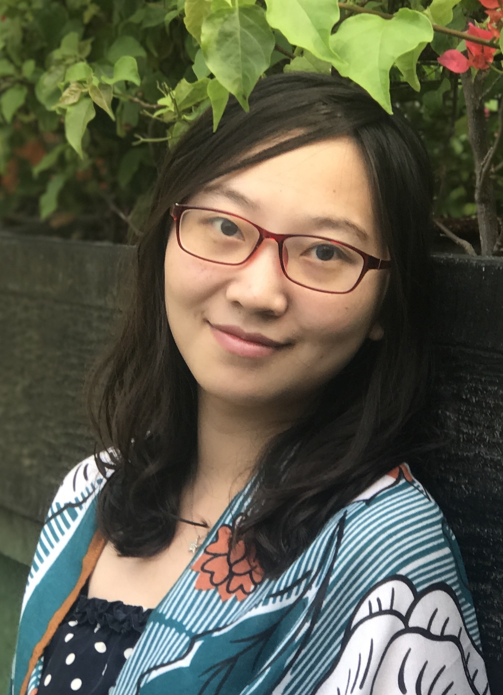

Huiyan Wang (王慧妍)
Ph.D. student, SPAR Group, Nanjing University (2015~now)
Email: cocowhy1013 at gmail dot com
Address: Room 813, Building of Computer Science and Technology,
Nanjing University (Xianlin Campus)
News:
Our paper has been accepted by ICSE2020. Congratulations!
Our paper has been accepted by JSS2020. Congratulations!
I was born in Taizhou, Jiangsu, China in 1993. I received my Bachelor degree in computer science from Nanjing University, Jiangsu, China in July 2015. Since September of 2015, I began to pursue my Ph.D. degree for software engineering under the supervision of associate researcher Jingwei Xu and Prof. Chang Xu, at the Institute of Computer Science (ICS), State Key Laboratory for Novel Software Technology, Department of Computer Science and Technology, Nanjing University. I am also a member of System & Program Analysis Research Group (SPAR group) at ICS.
My research interests include intelligent software quality assurance, context management, software analyses and testing.
| Publications (chronological order) |
Journal
- [JSS2020]Yicheng Huang, Chang Xu, Yanyan Jiang, Huiyan Wang, and Da Li. WARDER: Towards Effective Spreadsheet Defect Detection by Validity-based Cell Cluster Refinements. The Journal of Systems and Software (JSS), Vol. 167, Article 110615, pp. 1-19, Sep 2020, to appear. [pdf][CCF-B]
- [JCS2020]Huiyan Wang, Jingwei Xu, and Chang Xu. Survey on Runtime Input Validation for Context-aware Adaptive Software (环境感知自适应软件的运行时输入验证技术综述). Journal of Computer Science (计算机科学), Jun 2020, to appear.[pdf][中文CCF-B]
- [TSE2020]Huiyan Wang, Chang Xu, Bingying Guo, Xiaoxing Ma, and Jian Lu, “Generic Adaptive Scheduling for Efficient Context Inconsistency Detection”, IEEE Transactions on Software Engineering, to appear.[pdf][CCF-A]
Conference
- [ICSE2020]Huiyan Wang, Jingwei Xu, Chang Xu, Xiaoxing Ma, and Jian Lu, “DISSECTOR: Input Validation for Deep Learning Applications by Crossing-layer Dissection”, in Proceedings of the 42nd ACM/IEEE International Conference on Software Engineering (ICSE), to appear, 2020.(acceptance rate: 20.9%)[pdf][CCF-A]
- [ASE2019]Da Li, Huiyan Wang, Chang Xu, Ruiqing Zhang, Shing-Chi Cheung, and Xiaoxing Ma, “SGUARD: A Feature-based Clustering Tool for Effective Spreadsheet Defect Detection”, in Proceedings of the 34th IEEE/ACM International Conference on Automated Software Engineering (ASE Tool Demo), 1142–1145, 2019.(acceptance rate: 53.7%)[pdf][CCF-A]
- [APSEC2019]Ziqi Chen, Huiyan Wang, Chang Xu, Xiaoxing Ma, and Chun Cao, “Vision: Evaluating Scenario Suitableness for DNN Models by Mirror Synthesis”, in Proceedings of the 26th Asia-Pacific Software Engineering Conference (APSEC), 78–85, 2019.(acceptance rate: 34.7%)[pdf][CCF-C]
- [QRS2019]Da Li, Huiyan Wang, Chang Xu, Fengmin Shi, Xiaoxing Ma, and Jian Lu, “WARDER: Refining Cell Clustering for Effective Spreadsheet Defect Detection via Validity Properties”, in 2019 IEEE 19th International Conference on Software Quality, Reliability and Security (QRS), 139–150, 2019.[pdf][CCF-C]
- [QRS2018]Yi Qin, Huiyan Wang, Chang Xu, Xiaoxing Ma, and Jian Lu, “SynEva: Evaluating ML Programs by Mirror Program Synthesis”, in 2018 IEEE International Conference on Software Quality, Reliability and Security (QRS), 171–182, 2018.(acceptance rate: 22.3%)[pdf][CCF-C]
- [ICSME2017]Bingying Guo, Huiyan Wang, Chang Xu, and Jian Lu, “GEAS: Generic Adaptive Scheduling for High-efficiency Context Inconsistency Detection”, in 2017 IEEE International Conference on Software Maintenance and Evolution (ICSME), 137–147, 2017.(acceptance rate: 27.8%)[pdf]-[slides][CCF-B]
- [QRS2016]Huiyan Wang, Chang Xu, Jun Sui, and Jian Lu, “How effective is branch-based combinatorial testing? An exploratory study”, in Proceedings of the 2016 IEEE International Conference on Software Quality, Reliability and Security (QRS2016), 41–52, 2016.(acceptance rate: 29.1%)[pdf][CCF-C]
- Artificial Intelligence Scolarship 人工智能奖学金 (Nanjing University, 2019)
- Tung OOCL Scholarship 董氏东方奖学金 (Nanjing University, 2018)
- Outstanding Graduate of Nanjing University (Nanjing University, 2015)
- Subreviewer: TheWebConf 2020, ASONAM 2019
- TA for Guidance to Software Engineering Research (2018 Fall)
- TA for Principle and Techniques of Compilers (2017 Spring)
- TA for Guidance to Software Engineering Research (2016 Fall)
- TA for Principle and Techniques of Compilers (2016 Spring)
- TA for Guidance to Software Engineering Research (2015 Fall)
I love travelling and taking photos. Also, I quite enjoy watching comedy episodes, and I am a big fan of Friends, TBBT, and Modern Family. Welcome to chat with me about anything.
Last updated by Huiyan on 2020/06/10.